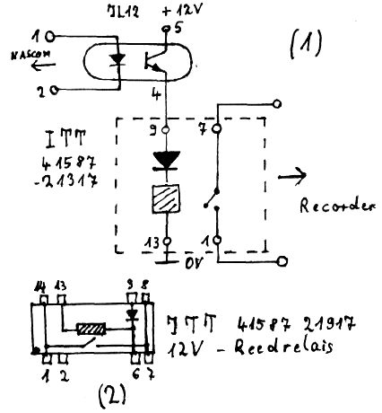
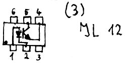

Nascom Journal |
4/80 |
Hier nun die Schaltung (1), sowie das Anschlußschema (2) + (3) der Bauteile:
Die Anschlüsse 1 und 2 werden mit der Nascom-1-Hauptplatine verbunden. Dazu kappt man ziemlich weit oben an den Anschlußdrähten die LED 1 ab und lötet an diese Anschlußdrähte die Zuleitung zum Optokoppler an (Oberseite der Platine). Anschluß 1 geht dabei an den oberen Anschluß der LED (Anode). Für die Computerschaltung bedeutet dies keine Veränderung; statt der Anzeige-LED wird einfach die LED des Optokopplers betrieben.
Sowohl der Optokoppler als auch das Reedrelais befinden sich in einem DIL-Gehäuse. Sie passen nebeneinander auf einen 24-Pin DIL-Sockel, der wiederum leicht auf ein Stückchen Veroboard montiert werden kann. Statt IL 12 können auch folgende Vergleichstypen genommen werden: TIL 112, H 11 A4, MCT 26, 4N28, OP 1022.
Jede derartige Fernsteuerung hat einen kleinen Nachteil: will man den Recorder manuell bedienen, wenn man zum Beispiel umspulen muß oder eine bestimmte Bandstelle sucht, muß man den Stecker der Fernsteuerung aus der Buchse ziehen. Da die Kontaktfeder der Fernsteuerung bei den meisten Recordern ein Verschleißteil ist, kann man zu der folgenden Softwarelösung greifen(NAS-SYS). Das 8-Byte-Programm kann an jede Stelle gelegt werden. Nach dem Aufruf wird der Recorder eingeschaltet. Drückt man nun eine beliebige Taste, so wird er ausgeschaltet, erneuter Tastendruck schaltet ihn wieder ein usf. bis
RESET: DF 5F DF 61 30 FC 18 F8.
| Günter Kreidl |  |
Zwei Betriebssysteme auf dem Nascom – 2
Außer dem neuen komfortablen Betriebssystem NAS-SYS wollen viele Anwender auch noch Nasbug T4 verfügbar haben. oft sind z.B. Programme für Nasbug vorhanden, oder das Betriebssystem muß interruptfähig sein (was NAS-SYS leider nicht ist!).
Will man sich nicht auf Dauer die Nerven (und die EPROMs) ruinieren, ist das Umstecken keine Lösung. Für den Nascom –1 wurde ja bekanntlich die Umschaltkarte entwickelt, auf der beide Betriebssysteme Platz finden und per Schalter ausgewählt werden können.
Für den Nascom – 2 gibt es eine einfache Lösung mit minimalem Hardware-Aufwand: Man steckt Nasbug T4 in die Plätze 1 und 2 des Blocks A (Plätze 3 und 4 müssen dann frei bleiben) und beschaltet den LKS 1 wie folgt:

| Seite 10 von 20 |
|---|